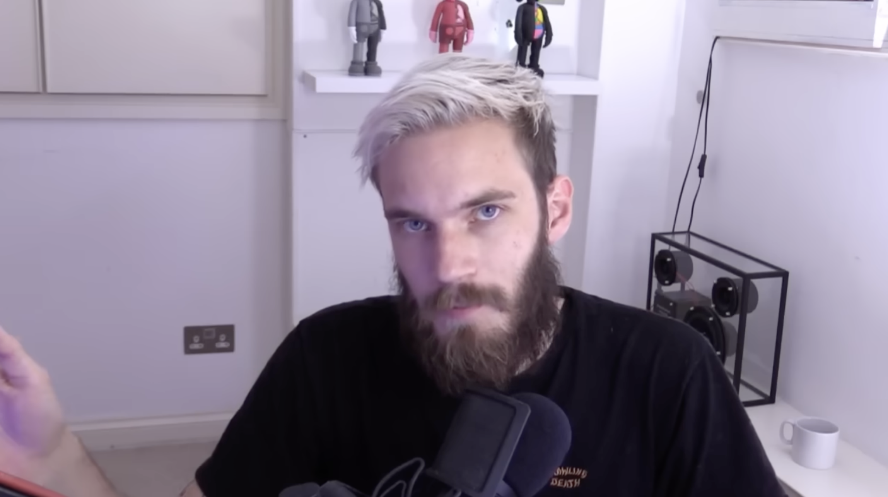

In 2017, the famous Youtuber accidentally used the n-word on a livestream. However, in comparison to Colleen, his video was much more well-received by his audience, as he was straightforward in his apology and made no excuses for his actions and simply said "he acted like an idiot". Later on in his career however, he did receive backlash for accidental anti-semitic jokes the same year, as well as mocking a deaf Youtuber who had manicured nails on while she was signing (the girl who was signing posted that while she was not pleased with his comments, she was willing to give him the benefit of the doubt). He was given second chances for most of these incidents, and has since retired from Youtube to spend more time with his family.
